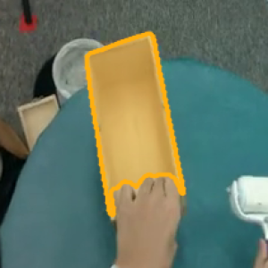
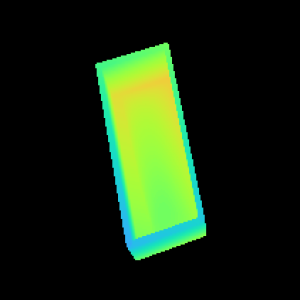
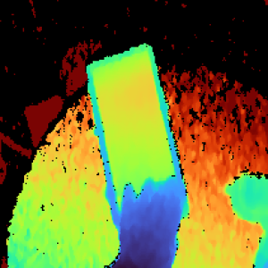
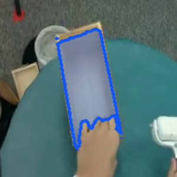
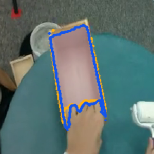
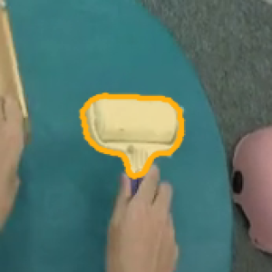
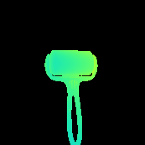
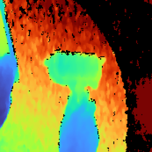
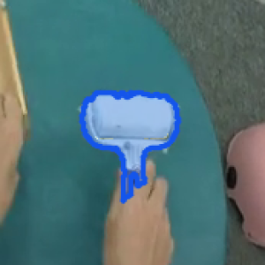
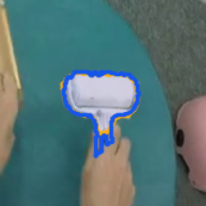

TACO multi-object pose trackingTACO 多物体位姿跟踪
Example 09 provides a runnable two-object tracking workflow. The estimates and visible-alignment diagnostics below come from a separate two-object experiment. The results describe this sequence and its stated depth tolerances; they do not validate complete multi-instance tracking accuracy for the current batch API. For the update interface, see batched pose tracking.
示例 09 提供可直接运行的双物体跟踪流程。下方估计结果及可见区域对齐诊断来自独立的双物体实验。结果对应本序列及所列深度容差，不能代表当前批量计算接口的完整多实例跟踪精度。更新接口见批量计算位姿跟踪。
Run example 09运行示例 09
Track a known wooden box and lint roller on raw frames 80–109, stride 1. Their CAD meshes and saved manual RGB clicks are inputs; SAM 2[2] predicts both initial masks. Neither preparation nor inference reads motion-capture poses, dataset masks or camera extrinsics. To use another first frame, save integer RGB clicks for that frame in examples/09_taco_init_clicks.json and update the visible frame interval.
在原始第 80–109 帧、步长 1 上跟踪已知木盒和粘毛滚筒。输入为两份 CAD 网格及保存的人工 RGB 点击点，SAM 2[2] 预测两个初始化掩码。准备及推理均不读取动捕位姿、数据集掩码或相机外参。更换首个处理帧时，在 examples/09_taco_init_clicks.json 保存该帧的整数 RGB 点击点，并修改脚本中可见的帧区间。
Complete the DINOv2 and SAM 2 setup[1], and compile the TensorRT[3] FP16 engines, including wbps_batch.engine, on your inference GPU. The example uses the OGL renderer. Unpack the five files listed below following the official TACO layout[4]; change raw_root in the preparation script if your dataset is elsewhere. The lossless depth reader requires imageio-ffmpeg.
先完成 DINOv2 与 SAM 2 环境准备[1]，在推理显卡上编译 TensorRT[3] FP16 引擎，包括 wbps_batch.engine；本例使用 OGL 渲染器。按 TACO 官方目录结构[4]解压下面五份文件；数据位于别处时，修改准备脚本中的 raw_root。无损深度解码需要 imageio-ffmpeg。
datasets/TACO/
Egocentric_RGB_Videos/(brush, roller, box)/20231104_007/color.mp4
Egocentric_Depth_Videos/(brush, roller, box)/20231104_007/egocentric_depth.avi
Egocentric_Camera_Parameters/(brush, roller, box)/20231104_007/egocentric_intrinsic.txt
Object_Models/093_cm.obj
Object_Models/076_cm.objpython -m pip install imageio-ffmpeg
python examples/09_taco_many_instances/prepare_sample.py
python examples/09_taco_many_instances.pyRun from the repository root. Preparation preserves uint16 depth, resizes it by nearest neighbor to the 512×376 RGB grid, and checks frame counts. The existing intrinsics already describe that grid. Inference divides depth by 4000 and converts mesh centimeters to meters. The untextured meshes use grayscale observations for pose and DINOv2, with color images for SAM 2 and display.
在仓库根目录执行。准备脚本保留 uint16 深度，以最近邻缩放至 512×376 的 RGB 网格，并检查帧数；现有内参已经对应这个像素网格。推理时深度除以 4000，网格从厘米转换为米。无纹理网格对应的位姿及 DINOv2 输入为灰度观测，SAM 2 与展示使用彩色图。
Encode each frame once with DINOv2, associate each track with its own reliable and initial features, and batch all active pose updates. WAPR/SAPR and WBPS run together across objects while keeping independent six-pose scoring groups. A missing region or score below the explicit experimental threshold 0.5 triggers searches using the two feature sources separately, followed by shared SAM 2 box segmentation and batched pose initialization. Rank the tracked or held pose against the actual recovery candidates in independent groups of two or three; choose top1 within each group. This threshold is not an accuracy criterion or a library default.
DINOv2 每帧只编码一次，各轨迹根据自己的可靠帧及初始化特征匹配区域，再批量更新全部活跃位姿。WAPR/SAPR 与 WBPS 跨物体合批，各物体保留独立的六候选评分组。区域缺失或分数低于显式实验阈值 0.5 时，分别搜索两种特征来源的区域，再共享 SAM 2 的图像编码分割候选框，并批量初始化候选位姿。将跟踪或保留位姿与实际补救候选组成独立的两、三候选组，组内选 top1；该阈值不代表精度达标，也不是库默认值。
normal_started = time.perf_counter()
updates = track_many_categories_many_instances(estimator, rgb_pose, depth_m, K, active)
torch.cuda.synchronize(device)
normal_seconds = time.perf_counter() - normal_startedSource: examples/09_taco_many_instances.py, lines 307–310代码来源：examples/09_taco_many_instances.py，第 307–310 行
Outputs go to outputs/taco_many_instances/: predicted initialization masks, box-and-contour previews, and tracking.json. TRACK and REASSOC update the reliable state. LOST keeps the previous reliable pose with pose_updated=false; that held pose is not a new estimate and is omitted from the preview. Each track retains its own ID. Recovery is an attempted search, not a guarantee of reacquisition.
输出位于 outputs/taco_many_instances/：预测的初始化掩码、包围盒与轮廓预览，以及 tracking.json。TRACK 和 REASSOC 更新可靠状态；LOST 保留上一可靠位姿，并记录 pose_updated=false，该保留值不是当前帧的新估计，也不绘入预览。各轨迹保留自己的编号；补救搜索不保证找回目标。
Model loading, mesh preparation/packing/GL upload, initial feature seeding and three discarded warmups are recorded separately. Each hot frame records shared-region time, normal pose time, recovery time and a continuous total; drawing, decoding and writes are excluded. Resource counters must remain unchanged in timed pose calls. Initialization uses 4×3 hypotheses and the visible repository update counts; tracking uses six hypotheses per object. The figures below use their stated experiment settings; their results cannot be directly attributed to these current example settings.
模型加载、网格准备及打包上传、初始特征建库，以及三次丢弃结果的预热均单独记录。每个热推理帧分别记录共享区域阶段、常规位姿阶段、补救阶段及连续总耗时，不含绘图、解码及写文件；计时内的资源操作计数必须保持不变。初始化采用 4×3 候选及仓库中可见的更新次数，跟踪为每个物体六候选。下方图表使用各自注明的实验设置，不能把其结果直接归于上述当前示例设置。
This example tracks two objects through 30 frames on RTX 4080 SUPER. This demonstration is not a dataset accuracy benchmark or an RTX 5090 speed measurement.
该示例在 RTX 4080 SUPER 上处理 30 帧、跟踪两个物体。这组演示不作为完整数据集精度或 RTX 5090 性能结果。
Sequence inputs序列输入
The saved TACO excerpt, (brush, roller, box)/20231104_007, contains a lint roller and a wooden box: 114 RGB-D frames, RGB at 512×376 and 30 fps, with both meshes and motion-capture reference poses. Divide stored 16-bit depth by 4000 to obtain meters (0.25 mm per count), then resize it to the RGB pixel grid; missing returns remain invalid. Input conventions and data links are in tracking resources.
本地 TACO 摘录 (brush, roller, box)/20231104_007 包含粘毛滚筒与木盒：共 114 帧 RGB-D，RGB 分辨率 512×376、帧率 30 fps，并含两份网格及动捕参考位姿。16 位深度值除以 4000 换算为米（每计数 0.25 mm），再缩放至 RGB 像素网格；缺失回波保留为无效深度。输入约定与数据链接见跟踪资源。
Bounding boxes and mesh contours. Video: WAPR estimates at left, TACO motion-capture references at right. Stills: WAPR above, motion capture below; each column shows the same frame. The estimated roller contour is blue and its reference is green; the box is orange in both methods. Across these 30 frames, their median origin differences are 30 mm for the box and 25 mm for the roller. The box rotations differ by 4.5°. The roller rotations differ by about 180°, although their contours overlap; this raw angle is sensitive to object symmetry.
包围盒与网格轮廓。视频左侧为 WAPR 估计，右侧为 TACO 动捕参考位姿；下方静帧上排为 WAPR、下排为动捕，每列对应同一帧。滚筒的估计轮廓为蓝色、参考轮廓为绿色；两种方法的木盒均以橙色区分。这 30 帧的原点距离中位数分别为木盒 30 mm、滚筒 25 mm。木盒旋转相差 4.5°；滚筒旋转相差约 180°，但轮廓仍重合，原始角度受物体对称性影响。
These two .obj files have vertices and normals only, no texture coordinates and no texture image, so the renderer uses gray vertices. The whole frame is converted to grayscale and stored as three equal channels before estimate_one_category_one_instance, dino_tokens, wapr_wo_mask, sapr, and WBPS. Frame 80 calls WAPREstimator.estimate_one_category_one_instance with a SAM 2 mask from one point on the box and one point on the roller. Each later frame keeps that pose, moves it with translation_from_one_instance, refines with wapr_wo_mask and sapr, and WBPS picks one of the six. Where the rendered depth and the sensor both return, the median absolute difference over these 30 frames is 16.5 mm on the box and 5.4 mm on the roller.
这两个 .obj 只有顶点和法线，没有纹理坐标，也没有纹理图，所以渲染用灰色顶点。整幅图先转成灰度，再存成三个相同的通道，然后才送给 estimate_one_category_one_instance、dino_tokens、wapr_wo_mask、sapr 和 WBPS。第 80 帧用木盒上的一个点和滚筒上的一个点得到 SAM 2 mask，调用 WAPREstimator.estimate_one_category_one_instance。后面每一帧留着这个位姿，用 translation_from_one_instance 平移，再用 wapr_wo_mask 和 sapr 修正，WBPS 在六个里面选一个。渲染深度和传感器都有回波的地方，这 30 帧绝对差的中位数是木盒 16.5 mm、滚筒 5.4 mm。
Annotations and visible contours标注与可见轮廓
This sequence has official 6D object-pose arrays: tool_076.npy for the roller and target_093.npy for the box, each with one 4×4 transform per frame. TACO also provides egocentric camera extrinsics. Its V1 release notes list automatic hand-object 2D segmentations, but those files are absent from this local excerpt; we have not verified masks for this exact episode. We found no separately verified 2D detection-box labels here. A box can be derived from a mask, but it is not an independent annotation.
这段序列有官方 6D 物体位姿数组：滚筒为 tool_076.npy，木盒为 target_093.npy，每帧各有一个 4×4 变换；TACO 也提供第一人称相机外参。官方 V1 发布说明列有自动生成的手物 2D 分割，但当前本地摘录没有这些文件，尚未核实这一段是否有完整可用的对应掩码。本地也没有单独核验过的 2D 检测框标注。从掩码可以导出包围盒，但它并非独立标注。
The TACO paper derives object poses from optical markers registered to scanned meshes. Its automatic 2D masks start from rendered hand-object silhouettes and are refined with SAM, so they should not be used as an independent test that favors or disproves the motion-capture poses. The supplement reports less than 1 mm world-space error for markers used in camera calibration; that does not establish the accuracy of the complete object pose after mesh registration, camera calibration, and synchronization. We therefore report WAPR-to-mocap pose differences as differences from a dataset reference, and use the following image comparison only as a visual alignment diagnostic.
TACO 论文从光学标记点及其与扫描网格模型的配准得到物体位姿。官方自动 2D 掩码先由手物网格剪影生成，再经 SAM 修正，因而不能把它当作独立证据来证明或否定动捕位姿。补充材料报告了相机标定所用标记点的世界坐标误差小于 1 mm，但这不能直接代表网格配准、相机标定和时间同步后的完整物体位姿精度。因此，我们将 WAPR 与动捕的位姿差记为相对数据集参考位姿的差异；下方图像比较只用于检查投影对齐。
For the image comparison, SAM 2 segments each object from a point in frame 80 and tracks that mask through later frames. This is a proxy visible mask, not a manually verified ground truth. Each WAPR or mocap pose renders a mesh depth map. Where sensor depth is valid and more than 40 mm nearer than the rendered surface, that rendered pixel is hidden. The final comparison restricts both masks to valid sensor-depth pixels, then computes IoU and the symmetric mean distance between their external contours. Missing-depth holes are not counted as internal contour edges. The example below uses frame 84; amber is SAM 2 and blue is WAPR. Both depth panels use the same 0.60–0.95 m color scale, with black for missing depth.
图像比较中，SAM 2 从第 80 帧每个物体上的一个点分割可见区域，随后逐帧掩码跟踪；这是一份近似可见掩码，并非经人工核验的真值。根据 WAPR 或动捕位姿渲染物体网格深度。当传感器深度有效且比渲染表面近至少 40 mm 时，去掉该渲染像素。最后将两块掩码限制到有效深度像素，计算交并比与外轮廓之间的对称平均距离；深度孔洞不另算内部轮廓。下面以第 84 帧为例：琥珀色表示 SAM 2，蓝色表示 WAPR。两幅深度图共用 0.60–0.95 m 色标，黑色为缺失深度。
Wooden box, frame 84木盒，第 84 帧





Lint roller, frame 84粘毛滚筒，第 84 帧





| Object物体 | Frames帧 | Motion capture动捕 | WAPR | ||
|---|---|---|---|---|---|
| IoU ↑Higher is better越高越好 | Contour error ↓外轮廓误差 ↓px · Lower is betterpx · 越低越好 | IoU ↑Higher is better越高越好 | Contour error ↓外轮廓误差 ↓px · Lower is betterpx · 越低越好 | ||
| Box木盒 | 80–109 | 0.72 | 4.1 | 0.83 | 2.5 |
| 80–86 | 0.63 | 4.8 | 0.87 | 2.5 | |
| Roller滚筒 | 80–109 | 0.69 | 4.6 | 0.85 | 1.8 |
| 80–86 | 0.66 | 3.6 | 0.85 | 2.5 | |
The 40 mm tolerance is an explicit diagnostic choice, not a calibrated sensor-noise estimate. At 20 mm, the long-window IoU becomes 0.74/0.81 for the box and 0.68/0.87 for the roller (motion capture/WAPR). In the short roller window, the motion-capture IoU changes from 0.66 at 40 mm to 0.44 at 20 mm: a smaller tolerance removes parts of its rendered surface as well as the occluded handle. The table therefore describes visible image agreement under this depth test, not 6D pose error or an ADD score. The complete mesh contours remain in the videos so the original pose geometry can also be inspected.
40 mm 是明确给出的诊断阈值，并非标定得到的传感器噪声。改为 20 mm 后，完整片段的木盒 IoU 为 0.74/0.81，滚筒为 0.68/0.87（动捕/WAPR）。在滚筒的短片段，动捕 IoU 则由 40 mm 下的 0.66 变为 20 mm 下的 0.44：较小阈值不仅去除了被手遮挡的握柄，也去除了部分渲染物体表面。因此，这张表衡量的是给定深度判断下的可见图像重合，不是 6D 位姿误差或 ADD。视频仍保留完整物体网格模型轮廓，便于同时检查原始位姿几何。
References and licenses参考文献与许可
- DINOv2 — Apache-2.0. Code and official DINOv2 weights; retain copyright and license.源码与官方 DINOv2 权重；保留版权和许可。 · GitHubGitHub · License/notice 1许可/声明 1
- SAM 2 — Apache-2.0; cctorch: BSD-3-Clause. Native source and official checkpoints; cctorch carries an additional BSD notice. Ultralytics-converted files require checking their distributor terms.原生源码与官方权重；cctorch 另附 BSD 声明。Ultralytics 转换文件还需核对分发方条款。 · GitHubGitHub · License/notice 1许可/声明 1 · License/notice 2许可/声明 2
- tensorrt-cu12 — Other/Proprietary License. Runtime dependency; dependencies and model/data assets retain their own licenses.运行依赖；依赖及模型/数据资源保留各自许可。 · GitHubGitHub · License/notice 1许可/声明 1 ↩ ↩
- TACO data — Not separately verified / 未单独核实. Data terms have not been separately verified. The official repository is the original source; the referenced Hugging Face acquisition mirror has no explicit license field. Confirm the data owner's terms for redistribution or commercial use.数据条款尚未单独核实。官方仓库为原始出处；实际获取数据的 Hugging Face 镜像数据卡未声明明确许可字段。再分发或商业使用须核实数据权利方的条款。 · GitHubGitHub
Model weights and dataset/task assets may have separate terms. WAPR's source license does not replace them.模型权重、数据集与任务资源可能有独立条款；WAPR 源码许可不替代这些许可。